AT Solutions · AI Agent Solutions Consultant · Take-Home Assignment
The assignment asked me to design two agents on paper. I answered all four steps and both bonus questions — and because the best way to judge an agent design is to try it, I also built the whole thing as a working product. You can sign in and use it right now.
owner@marlowandsage.com · palate2026pnpm install && pnpm dev) — the hosting plan cuts
anything longer than 5 minutes.A two-person marketing team doesn’t need “an AI strategy”. They need hours back, without losing control of how their brand looks and sounds. So before proposing any agents, I would spend an hour with them and ask:
The product in this report bakes those answers in as defaults: a human approval step on everything customers can see, brand rules kept as plain-English notes the team can read and edit themselves, and hard limits around safety, consent and claims.
Instead of four separate black boxes, Palate is one AI agent (Claude Opus 4.8) that can be handed four different jobs — listening, briefing, creating, reviewing. It works with 23 small tools, each doing one simple thing: look something up in the database, save an insight, generate an image, ask the team for a decision. All four jobs read the same brand-knowledge folder — short plain-English notes about voice, style and rules — and write lessons back into it. Why this matters for the client: when their needs change, we change a few sentences of instructions. Nothing gets rebuilt.
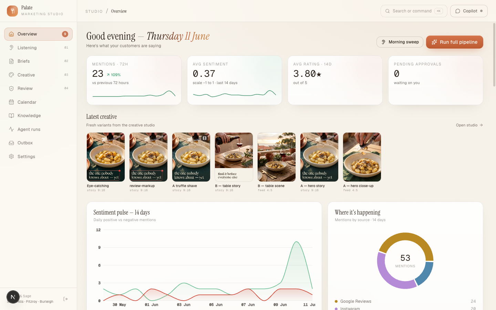
The home screen: today’s numbers, the latest creative, the sentiment chart, the agent’s suggestions — and a live feed of what the agent is doing right now.
| Source | Tool / API | In plain terms |
|---|---|---|
| Google Reviews | Google Business Profile API | Google’s official, free connection. The team grants access once with their Google account; after that, new reviews flow in automatically. |
| Meta Graph API | One Meta developer app covers both Facebook and Instagram. New comments can be pushed to us the moment they appear. | |
| Instagram Graph API (same Meta app) | Needs a business Instagram account linked to the Facebook page — most restaurants already have this. | |
| Understanding the text | Claude (the agent itself) | The agent reads each item and tags the mood, the topics and the dishes mentioned. No extra “sentiment software” to buy. |
In the demo, the three sources run on realistic made-up data. Palate also has a setup helper: the agent opens a real Chrome window, walks through the Google/Meta settings pages with you, you do the sign-ins, and it finds and saves the access keys. For a two-person team, getting connected is the real hurdle — not choosing the API.
One morning run (about 4 minutes, fully automatic) produces three things:
A real example from a run on the demo data: “CRITICAL (private, never post): Fitzroy served undercooked roast chicken again (9 Jun, 1 star — ‘pink and cold in the middle’). Same problem the kitchen was retrained on — it’s happening again. Flagged for a same-day temperature-check; keep this off social media entirely.”
A few simple rules, written into its instructions in English:
“Before you finish your first coffee, it has read every review and comment across all three venues and hands you a 30-second summary — leading with anything that could hurt you, backed by your customers’ own words.”
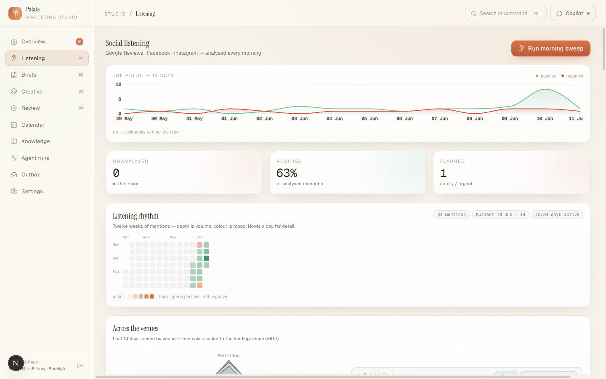
Listening: the 14-day mood chart, a 12-week activity map, venue comparison, the analysed feed, and insights with customer quotes.
Good enough that the designer doesn’t need to ask a single follow-up question:
| Field | Why it stops the back-and-forth |
|---|---|
| Title + date + venue | One brief per day, one clear subject. |
| Goal | A business outcome (“turn the truffle-gnocchi buzz into bookings”), not just “make a post”. |
| Who it’s for | A named customer type (“Date-night Dana”) and what she responds to. |
| Key message | Written the way a customer would say it — usable in the caption as-is. |
| Tone | Three words from the brand voice notes (“warm, confident, quietly witty”). |
| Channels & formats | Instagram story 9:16 / feed 4:5 / Facebook — decided, not left open. |
| Visual direction | Points at the style notes: the light, the angle, the colours, what’s in the shot. |
| Wording rules for this post | Must-say and must-not-say (“gnocchi contains gluten — never suggest otherwise”). |
| Call to action + best time to post | What the reader should do, and when the audience is actually looking. |
| Which insights it came from | So anyone can see why this brief exists. |
You are Palate, the marketing agent for {brand}. Your job today: write the content brief.
1. Read the latest insights (last 3 days, with quotes) and the open suggestions.
Read the lessons-learned notes and the last 5 briefs, so you never repeat an idea.
2. Pick today's single best idea. Note in one line why it beats the second-best idea.
3. Save ONE brief — so complete the designer asks zero questions: a clear goal,
the customer type, the key message in customer language, tone words from the
voice notes, channels, call to action, a visual direction that follows our
style notes, any must-say / must-not-say wording, and the best time to post.
4. Rules of thumb: back what's rising, not what's already full; never build posts
on safety complaints; claims like "sells out nightly" need a manager to confirm
first; vary the venue and the angle across the week.
5. Finish by naming the second-best idea and when it would be the right choice.
A few deliberate choices: one brief only (forces a decision), “zero questions” as the quality bar, and the “second-best idea” rule — it makes the agent show its thinking. All the rules are plain sentences the client can change.
In a real run, the agent picked the truffle-gnocchi launch over the pavlova for exactly these reasons — and wrote the pavlova up as the second-best idea, ready for the day the manager confirms the claim.
I treat that sentence as a lesson to capture, not a complaint to argue with:
The brief said (shortened): Winter truffle gnocchi — “the Burleigh dish nobody knows about yet”. Instagram story + feed. Make the dish the hero: 45° angle, steam, glossy sauce, timber terrace in the background, golden-hour warmth, terracotta and cream tones.
The image prompt the agent wrote (real):
45° hero shot of hand-rolled potato gnocchi in a cream ceramic bowl, glossy brown-butter sauce, fresh black winter truffle being shaved over the top mid-shave (hand and shaver only, no posed face), visible steam, shallow depth of field with the bowl tack-sharp; weathered timber terrace table softly blurred behind; natural golden-hour warmth; terracotta and cream accents, eucalyptus-green linen; appetising, editorial food photography, no text.
It also attaches the real photo of the dish from the brand library, so the plating and the bowl match reality. For stories, it includes the exact overlay line in quotes (“the one nobody knows about — yet”) plus the brand’s wordmark.
These rules live in one style note the team can open and edit. Change the note, and every future image follows it.
A ready-to-review package per brief, appearing live in a gallery as it’s made (about 5 minutes, roughly $1 in total): two creative directions × every needed shape (4–6 images), two caption options per channel with hashtags, and one short video — plus the agent’s own recommendation of which caption-and-image pairing to use, and why. The gallery has one-click keep/reject, an Instagram preview that shows any candidate inside a phone screen, a story player, and a “refine” box (“make the sauce glossier”) that edits the image in place.
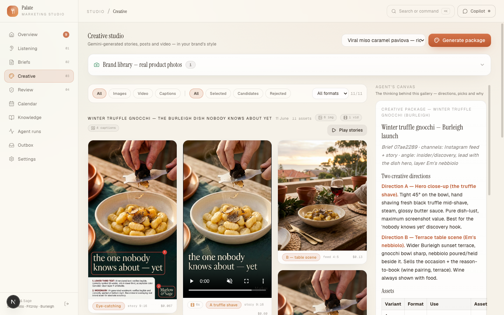
The creative studio: the brand’s real dish photos, the gallery of options, captions, and the agent’s notes on the right.
Four short documents. We write them together in a workshop — I draft, they correct. (Much easier than asking a busy marketer to write rules from scratch.)
As a handful of short plain-English notes, and the agent reads all of them every time. I deliberately didn’t use a search database for this: the notes are small enough to give the agent in full, so there’s no chance a search step quietly misses the one rule that mattered. The practical wins: the client can open and edit their own rules; every change is saved as a new version with a side-by-side diff and an undo; and the agent adds its own learned rules (clearly marked as agent-written) which the team can check. On top of that, the most important rules are enforced by the software itself: the publishing tool refuses to run unless a human approval is attached. The instructions ask nicely — the code makes sure.
Each one gets a score out of 100 with a one-line note — so “feels off-brand” becomes a number the team can discuss.
| Outcome | When | What happens |
|---|---|---|
| Pass | Everything scores 75+ and no hard rule is broken | The scorecard is saved and the post goes to the human approval step. Passing does not mean published — a person still clicks. |
| Flag | Anything scores 50–74, or there’s a fixable issue | The agent lists exact fixes — and for image problems it draws boxes on the picture showing what’s wrong. One retouch is tried, then it’s reviewed again. |
| Reject | A hard rule is broken, or anything scores under 50 | A plain-English explanation; the post goes back to “changes requested”; the lesson is added to the notes so the same mistake fades out. |
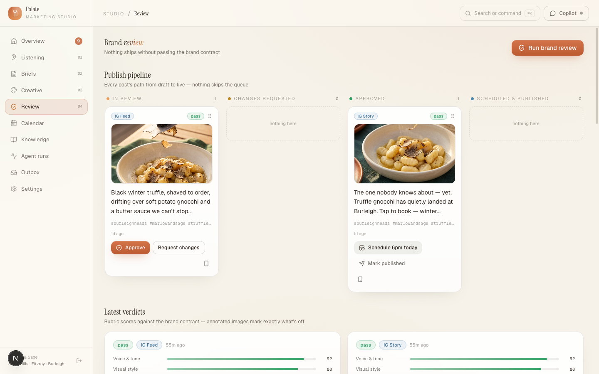
The review board: every post moves through the same queue, with scorecards — and a human click as the final step.
What starts each step. Three ways in, same machinery underneath: the 7:00 am Autopilot runs the whole cycle daily; any single step can be run from its own page (“Generate today’s brief”); and the chat can kick off any step in plain words (“draft a reply to the slow-service review”). Steps hand work to each other through saved, editable pieces — insights → brief → images → post — not through some invisible chain. That means a person can step in anywhere: edit the brief before the images are made, or reject one image without redoing the whole morning.
If a step fails (an outage, a time-out, the spending cap): the run is marked failed and its full step-by-step log is kept. Whatever was already made is saved — if image 4 of 5 failed, you keep the first three. Nothing downstream goes out by itself, because the human step never fired. The team sees the failure in the run log and the daily digest, and a “Continue” button picks the agent up exactly where it stopped, with everything it knew — no starting over. The worst case is always “the team does today the old way”, never “something wrong went out”.
One real, unplanned example of the whole loop: during the build, the morning Autopilot ran by itself. It read the overnight mentions, noticed that an already-approved caption broke two rules the owner had taught it the day before (the word “pillowy”; a 60-word limit), wrote a corrected caption, and stopped at the approval step to ask permission to swap it — quoting the rules by name. Every step, plus the learning loop, working together with nobody pressing a button.
What I would actually say to the client:
“Almost — and the ‘almost’ is what protects you. That button exists: Autopilot runs the whole cycle every morning at 7. By the time you open your laptop, the reviews are read, today’s brief is written, the visuals are made and checked against your brand. The one thing it won’t do is publish without you. That last click — about two minutes of your day — stays with you, for three reasons.
“First, the rare cases are the ones that matter. Last week the system caught a review about undercooked chicken. A fully automatic system having a normal day might have posted cheerful food content right on top of that; you’d know instantly not to. You’re not checking its spelling — you’re adding the judgement only you have. Second, responsibility: when something goes out under your name, a person chose it. ‘The AI posted it’ is not an answer you want to give anyone — ever. Third, your two minutes are how it learns: every approve, reject and edit teaches it your taste, so the checking keeps getting faster — it already caught one of its own captions breaking a rule you’d taught it the day before. And it’s not just me being careful: every serious AI marketing product on the market keeps a human approval step, for the same reasons. If reviewing ever starts feeling like a chore that isn’t shrinking, that’s a fault in my system — not a reason to remove the step.”
Everything below is the real product, captured while it was running. Starting with what usually impresses people most.
Every run is a live window you can watch (and replay later): the agent’s thinking as it streams, each tool it uses (“Saving review → pass 90/100”), the images and charts it makes — and the moment something customer-facing is at stake, it stops and asks. Here the review agent files two scorecards, then says: “Now I’ll request human approval to move the corrected feed post to approved.” Your answer is recorded in the same timeline, the cost is on the receipt ($1.16), and the “Follow up” box lets you continue the same conversation — even days later, it still remembers everything.
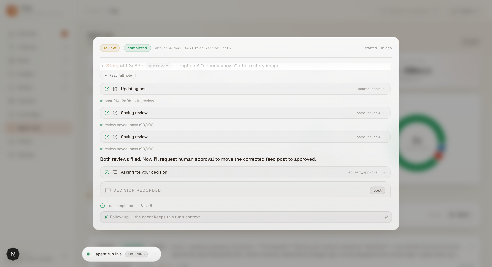
Any image-and-caption option can be shown inside a realistic phone screen — story progress bar, account name, “Send message” bar and all. Choosing between option A and option B stops being abstract: the team judges the exact thing their guests will see. There’s also a story player to watch the full sequence, and a before/after slider for retouches.
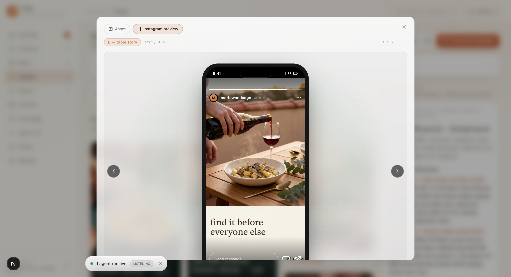
From one brief, the agent produces the whole visual package by itself: several image options in every shape a channel needs (story, feed, square), each grounded in real photos of the actual dish so the food looks like what guests are served — and one short vertical video with sound, built from the best photo. Everything appears in the gallery live, as it’s made, with the price visible on every item (about 13 cents an image, about 60 cents a video). If something is close but not right, type a note like “make the sauce glossier” and it edits that image in place.
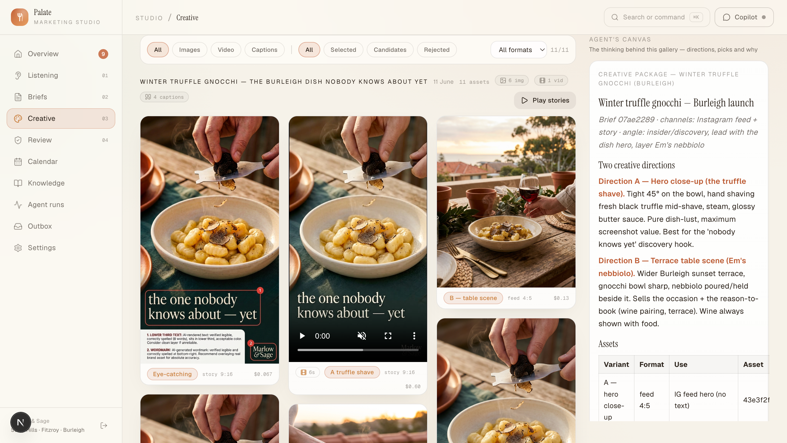
The chat on the right side of every page is the same agent in conversation. Ask “which dish is trending this week?” and it answers with real numbers from your data; tell it “never use the word ‘pillowy’” and it updates the brand notes permanently; ask for a digest email and it drafts one and asks before sending. It remembers earlier conversations, and when a job needs outside information it can also search the web and read pages — for example, checking what an influencer actually posted before quoting them in a brief.
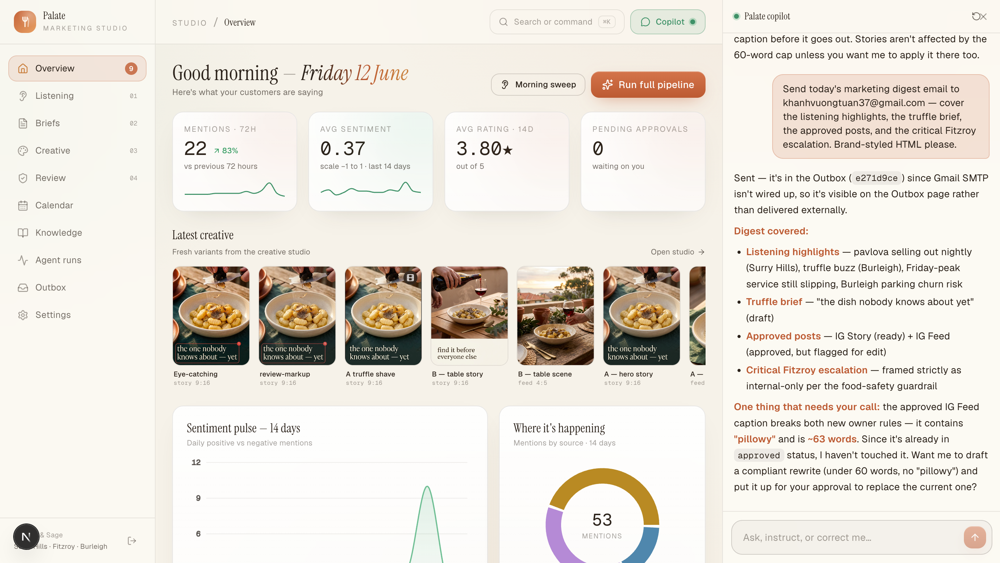
Connecting Google and Meta accounts is where non-technical teams usually get stuck. So Palate makes setup itself a job for the agent: from any connection card, it opens a visible Chrome window on your computer, finds its way through the settings pages, and pauses at every sign-in to hand control to you — it never sees a password. Below: the record of a real run where the person cancelled at the sign-in step, and the agent saved the connection as “pending” with an honest note about exactly where it stopped.
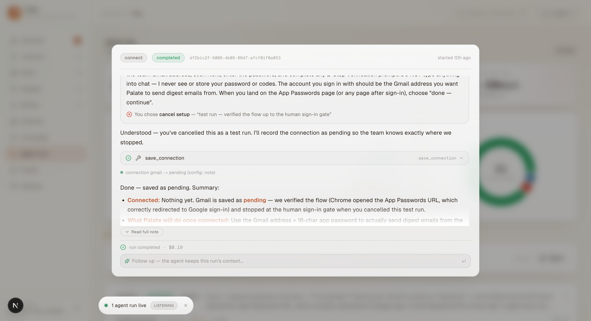
The brand guidelines are living notes with a history. When the owner typed “never use the word ‘pillowy’; keep feed captions under 60 words” into the chat, the agent updated the voice notes itself — the green/red comparison below shows exactly what it added, marked as agent-written, with one click to undo. The next morning it enforced those rules against its own already-approved caption, without being asked. That’s the difference between an instruction and a memory.
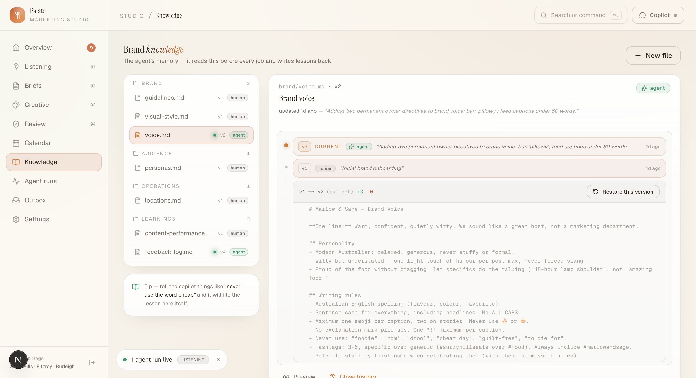
Briefs and posts land on a month view with their channel and status visible at a glance. Approved posts can be dragged to a new day to reschedule them (saved instantly, 6 pm by default), a small “unscheduled” shelf holds approved work still waiting for a date, and “Ask Palate about gaps” hands the whole month to the agent to plan around.
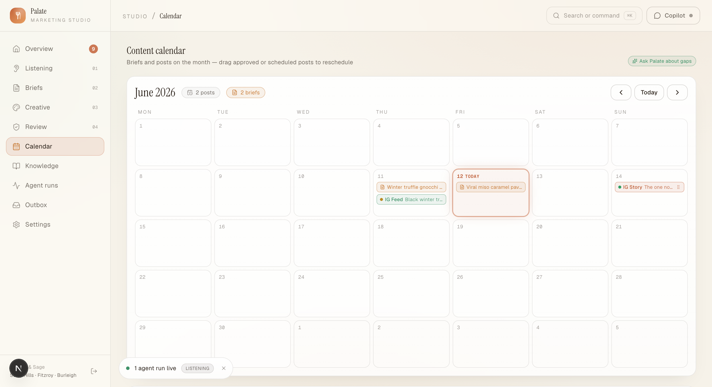
One search box finds everything — reviews by customer name, briefs, images with thumbnails, the brand notes — and can also start agent runs: type “Run morning sweep” from any page and watch it live in the corner. With keyboard shortcuts, alerts, and an always-visible “decision waiting” button, the studio is quick to drive once you know it.
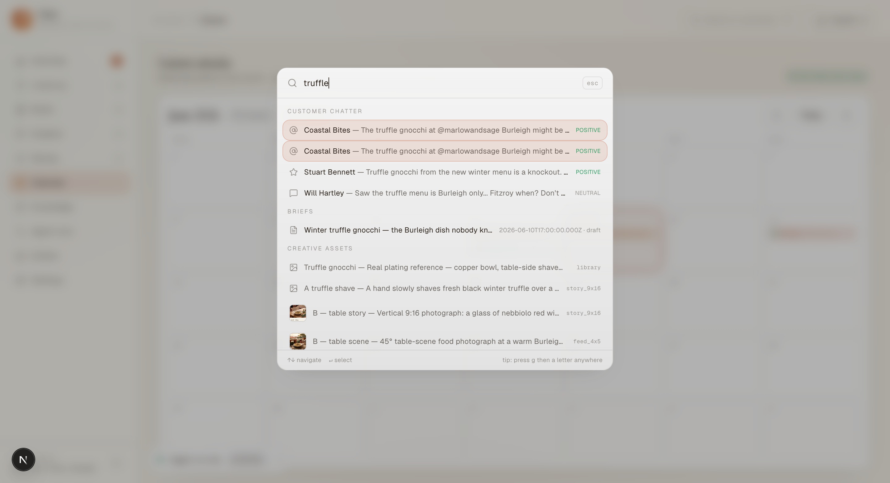
| Capability | Why it matters |
|---|---|
| An approval step that really blocks | The agent pauses mid-run until a human answers — and publishing or emailing is refused by the software itself without an approval attached. The model can’t talk its way past it. |
| A memory the client owns | Brand notes with versions, comparisons and undo. The agent adds its own lessons, clearly marked, and the team can check them. The “pillowy” rule went from a chat message to an enforced rule overnight. |
| Conversations that pick up where they left off | The chat remembers earlier sessions, and any finished run can be continued with its full memory — tested across a 19-hour gap. |
| Agent-assisted setup | The agent walks the team through Google/Meta account connection in a real browser window, with humans doing every sign-in (works when running locally). |
| A real operations view | Content calendar with drag-to-reschedule, a live feed of agent activity, full run logs with per-run cost, a daily Autopilot switch, search-everything, and an email digest. |
| Known, measured costs | Measured in the build: morning sweep ≈ $0.76 · brief ≈ $0.40 · creative package ≈ $0.50 + ~$0.13 per image + ~$0.60 per video · review ≈ $0.98 · chat replies $0.06–0.29. A full day’s cycle is roughly $2–3 (about A$100/month) — against 1.5–2 staff hours saved every day. |
brand/voice.md → History → see the agent’s change) → Agent runs (the logs, costs, and “Continue”).git clone https://github.com/ArchiusVuong-sudo/palate && pnpm i && pnpm dev with the provided .env.local → press “Run full pipeline” and answer the approval card when the agent asks.